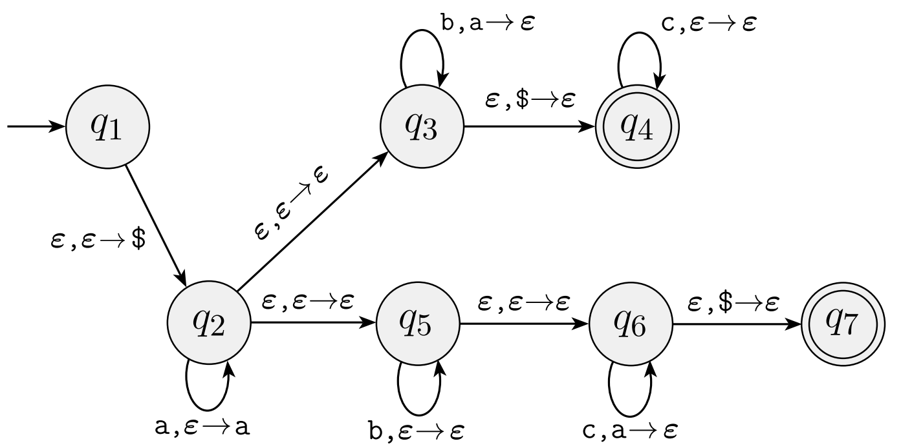

Homework 5
Last updated: Mon, 28 Feb 2022 00:08:09 -0500
Out: Mon Feb 28, 00:00 EST Due: Sun Mar 06, 23:59 EST
This assignment continues exploring context-free languages, with pushdown automata.
Homework Problems
A Pushdown Automata Example (6 + 4 = 10 points)
Design Your Own PDA (8 points)
CFLs Can Have Closed Operations Too (3 + 3 + 3 = 9 points)
NFA->PDA (8 points)
README (1 point)
Total: 36 points
Submitting
Submit your solution to this assignment in Gradescope hw5. Please assign each page to the correct problem and make sure your solutions are legible.
A submission must also include a README containing the required information.
1 A Pushdown Automata Example
For the following PDA state diagram: 
Give a complete formal description for this PDA,
- and then give one possible computation sequence, i.e., a sequence of PDA configurations, for each of following input strings. If the computation does not end in an accept state, briefly explain why it gets stuck.
\texttt{aabbc}
\texttt{abbccc}
2 Design Your Own PDA
Come up with a PDA for the language from the Design a CFG problem in Homework 4:
L = \left\{w\mid w = \mathrm{rev}(w)\right\}
(where \mathrm{rev} is the function you defined in Reversing Strings from Homework 3)
You can assume alphabet \Sigma = \{\texttt{x},\texttt{y}\}.
Submitting just a state diagram for this problem is acceptable.
3 CFLs Can Have Closed Operations Too
union
concatentation
Kleene star
4 NFA->PDA
Come up with a conversion function \texttt{NFA}\!\rightarrow\!\texttt{PDA} that, given some NFA N = (Q_N,\Sigma,\delta_N,q_N,F_N), produces an equivalent P = (Q_P,\Sigma,\Gamma,\delta_P,q_P,F_P).
This also proves that every regular language is also a CFL! (Note: the opposite is not true)